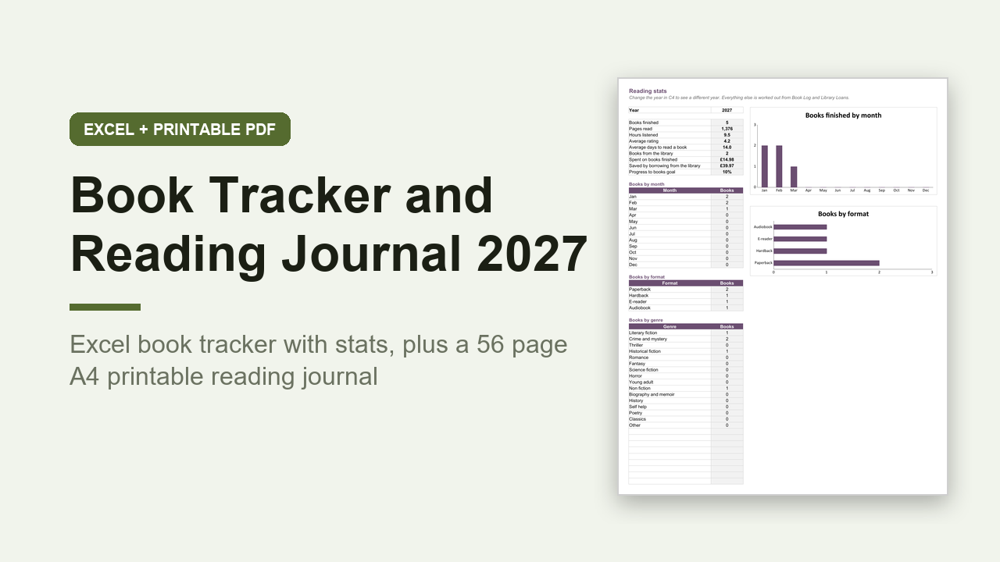

Book Tracker Spreadsheet and Reading Journal 2027, Excel and A4 PDF, UK
GBP 6.00 · instant digital download

Track every book you read in 2027, in a spreadsheet that does the counting and a printable journal you write in.
Made in the UK: A4 paper, UK spelling, prices in pounds, dates as DD/MM/YYYY, and a library loans sheet that adds up how much borrowing saved you.
What you get: 2 files.
1.
An editable Excel workbook (.xlsx) with 10 sheets: Start here, Stats, Book Log, Challenge, To Be Read, Library Loans, Series, Gift Wishlist, Quotes and Lists.
Stats shows books and pages read, hours listened, average rating, days per book, money spent and saved, a books by month chart, and counts by format and genre.
Challenge takes your goal in books and pages, fills in a box for each book and shows how many a month you need.
Library Loans turns amber and red as due dates come up.
A worked example with made up books is filled in.
2.
A printable A4 PDF reading journal, 56 pages, not editable, you print it and write on it.
Inside: how to use, a 52 book challenge, a 100 spine bookshelf to colour in, 6 reading log pages (120 books), an example review and 24 blank review pages, a wrap up page for each month of 2027, 2 to be read pages, a series tracker, a library loan record, a reading bingo card, a gift wishlist, quotes and notes.
Opens in Excel, Google Sheets and Numbers.
Digital download, nothing is posted..
What happens after you buy
Payment and delivery are handled by Gumroad. You get the download straight after paying, and a copy of the link by email. Nothing is posted to you.
Tags: book tracker, reading journal, reading tracker, book log, reading challenge, book lover gift, excel tracker, a4 printable, uk planner, book review